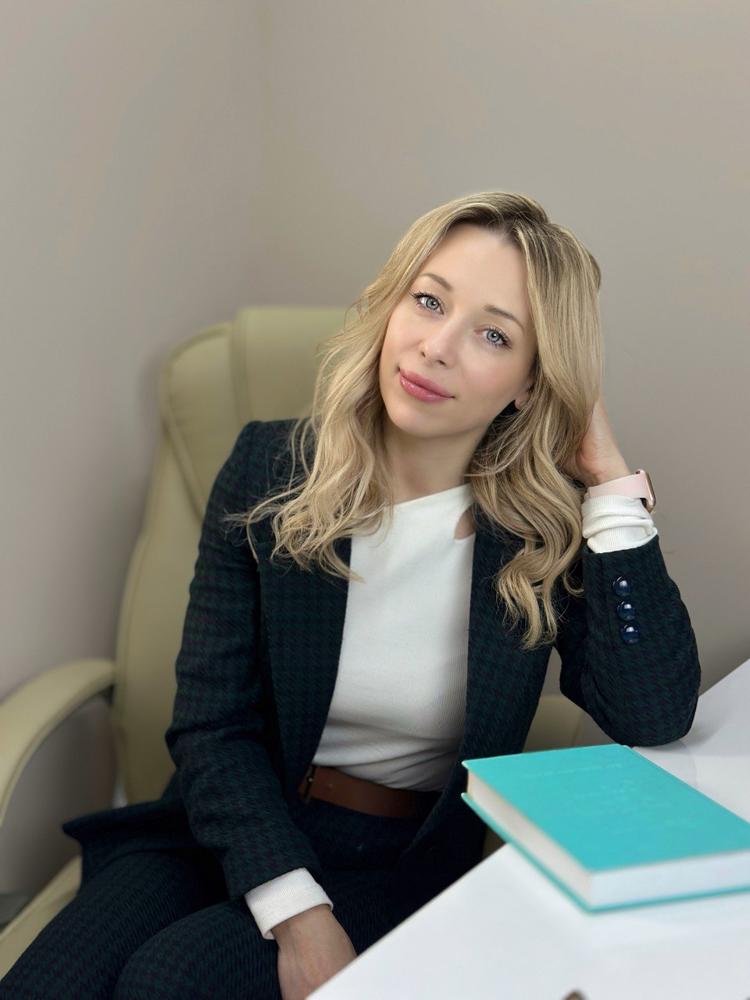

Швец Инна Михайловна
Коммерческий директор | Директор по развитию | Эксперт в управлении ритейлом оптики
📍 Тирасполь, ПМР | 📅 30.05.1984 | @innasvec
🎯 Цель
Применение экспертного опыта в стратегическом управлении, операционном росте, развитии новых направлений и построении высокоэффективных команд. Реализация проектов на стыке фармацевтики, оптики и косметологии с фокусом на устойчивый рост, мультиканальность и клиентский сервис премиального уровня.
🎓 Образование
- 2023 – наст. вр. — Московский колледж "Галактика", "Оптометрист, мастер-изготовитель очков"
- 2010 — Тираспольский межрегиональный университет, факультет фармации (красный диплом)
- 2006 — Приднестровский государственный университет, специальность "Химия" (красный диплом)
🧩 Ключевые компетенции
- Коммерческая стратегия, формирование юнит-экономики, управление P&L
- Выведение брендов и линеек товаров на рынок, category management
- Лидерство в операционном управлении и развитии розничной инфраструктуры (Greenfield, Rebranding)
- Продвинутый анализ данных: ABC, XYZ, LTV, RFM, Customer Journey
- Построение эффективных команд: подбор, развитие, внедрение KPI и мотивации
- Маркетинг, контент-стратегии, бренд-коммуникации, PR-проекты
- Автоматизация бизнес-процессов, интеграция 1С, CRM
- Инициирование и реализация ESG и социальных инициатив
💼 Опыт работы
- ООО "Вивафарм" — Директор по развитию / Руководитель маркетинга | с 10.2024 – наст. вр.
- ООО "Красота и здоровье" — Коммерческий директор | 2023 – наст. вр.
- Сеть VivaOptica — Директор / Основатель концепта | 2018 – наст. вр.
- ООО "ВиваФарм" — Аналитик / Менеджер по закупкам | 2016 – 2018
- Аптечная сеть "Провизор" — Управляющая аптекой | 2014 – 2016
- Merck Sharp & Dohme — Медицинский представитель / Координатор отдела | 2007 – 2011
- GlaxoSmithKline — Медицинский представитель | 2007
- Тираспольский медколледж — Преподаватель фармацевтической химии | 2006
🌱 Личное и дополнительное
- Лидер женского предпринимательства в ПМР, участница Women Up Moldova
- Организатор форумов по темам здоровья, психологии, карьеры, soft skills
- Эксперт и наставник в области женского лидерства и личного бренда
- Благотворительные проекты: социальная офтальмология, помощь уязвимым группам
- Авторские подкасты, марафоны осознанности, спортивные инициативы
- Практика дыхательных техник, нутрициология, спорт и здоровье как система
- Обучение фармацевтов и врачей по методике soft education
- Активный пользователь AI-технологий (GPT, генеративный контент, визуализация данных)
⭐ Мои сильные стороны
- Системное мышление и vision-подход к продукту и команде
- Кросс-функциональные навыки: закупки, маркетинг, аналитика, сервис
- Вдохновляющее лидерство, работа в условиях неопределённости
- Высокая стрессоустойчивость, ресурсность, эмпатия
- Инновационность, способность задавать тренды и формировать смыслы